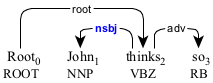
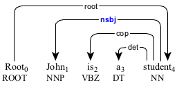
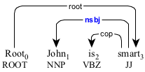
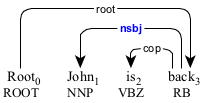
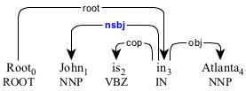
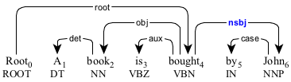
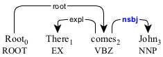
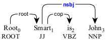
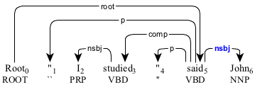

A nominal subject (nsbj) is a nominal in the subject position.

The nominal subject "John" modifying the predicate "thinks".
The nominal subject can modify a non-verbal predicate (see copula for more details).

The nominal subject "John" modifying the nominal predicate "student".

The nominal subject "John" modifying the adjectival predicate "smart".

The nominal subject "John" modifying the adverbial predicate "back".

The nominal subject "John" modifying the prepositional predicate "in".
In a passive construction, the nominal subject comes after the predicate.

The nominal subject "John" in the passive construction.
When used with an expletive (expl), the nominal subject comes after the predicate.

The nominal subject "John" used with the existential "there".
When used in topicalization, the nominal subject comes after the predicate.

The nominal subject "John" used in topicalization.

The nominal subject "John" topicalized for the direct speech "I studied".